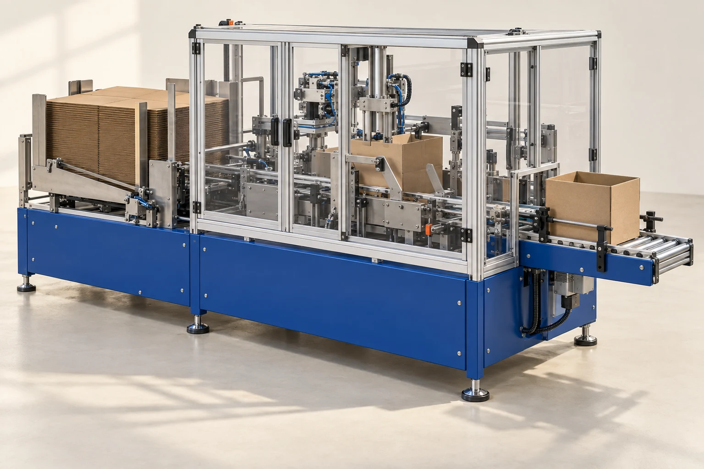

FORM / E200

Original concept visual; final engineering is project-specific.
An open carton.
A practical starting point.
Turn flat carton blanks into open, bottom-taped cases beside your packing bench. The E200 is intended for regular-slotted cartons run in planned batches.
- Operation
- Automatic erecting; bottom tape
- Carton length
- 200–500 mm
- Carton width
- 150–400 mm
- Carton height
- 120–400 mm
- Planning rate
- Up to 12 cases/min, subject to trial
- Machine body
- 2,200 × 1,600 mm
How it fits your line
An operator replenishes the blank magazine and resets the guides between carton formats. Loading direction, board behaviour and tape specification are agreed using your actual samples.
Selection limits
Best suited to repeated runs of dry, regular-slotted cartons. Die-cut trays, wet board and mixed random formats need a different assessment.
Service access
Accessible tape unit, common belt wear parts and a format-setting record supplied at handover.